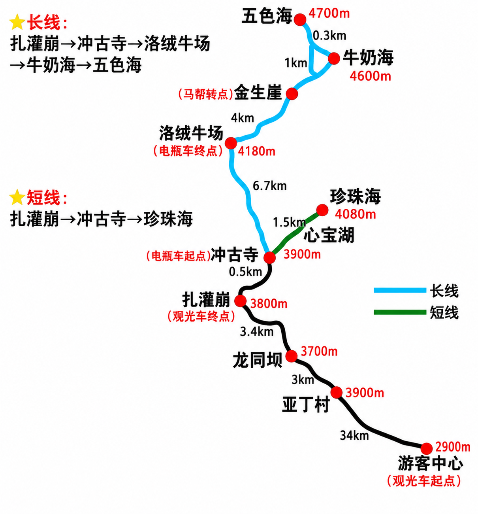

亚丁旅游地图

游客中心 → 扎灌崩（观光车）· 冲古寺 → 珍珠海（短线·绿）· 冲古寺 → 洛绒牛场 → 牛奶海 → 五色海（长线·蓝）
共同路线：入口 → 扎灌崩 → 冲古寺
→大巴 约1小时
→步行 0.5km
⛺
冲古寺电瓶车起点 · 3900m · 长短线分岔口
* 车程为参考值，以现场排队与路况为准；冲古寺即是短线起点，也是长线电瓶车的起点。
二选一 · 长线 / 短线
短线 · 轻松
冲古寺 → 珍珠海
⏱ 约 2.5–3 小时 · 往返 4 km · 海拔 3900→4080m
- 冲古寺短线起点，顺时针上山
- 心宝湖途经小海子，约 1 km
- 珍珠海4080m · 正对仙乃日雪山，可拍雪山倒影
- 原路返回冲古寺下山约 1 小时
往返 4 km · 木栈道为主，爬升约 200m，适合体力一般 / 高反敏感 / 时间有限者
长线 · 挑战
冲古寺 → 洛绒牛场 → 牛奶海 → 五色海
⏱ 全天约 7–9 小时 · 徒步往返 10 km · 海拔 3900→4700m
- 冲古寺乘电瓶车出发（约 6.7km，参考往返 80 元）
- 洛绒牛场4180m · 电瓶车终点，仰望央迈勇，补给点
- 舍身崖徒步 4 km 缓坡马道 · 马帮转点
- 牛奶海4600m · 末段 1 km 陡升，亚丁招牌
- 五色海4700m · 再爬升约 100m，全程最高点
- 原路返回出沟下山膝盖压力大，善用登山杖
电瓶车 + 徒步往返 10 km · 累计爬升约 600m，适合体力好、已适应高原者；马匹数量有限需赶早
一日游建议：二者选其一即可，贪多必累。体力好想打卡牛奶海选长线（赶最早一班进沟）；想轻松看雪山倒影、时间充裕再逛冲古草甸选短线。全程海拔 4000m+，慢走多喝水，随身备氧气瓶；出现剧烈头痛、呕吐请立即下撤就医。